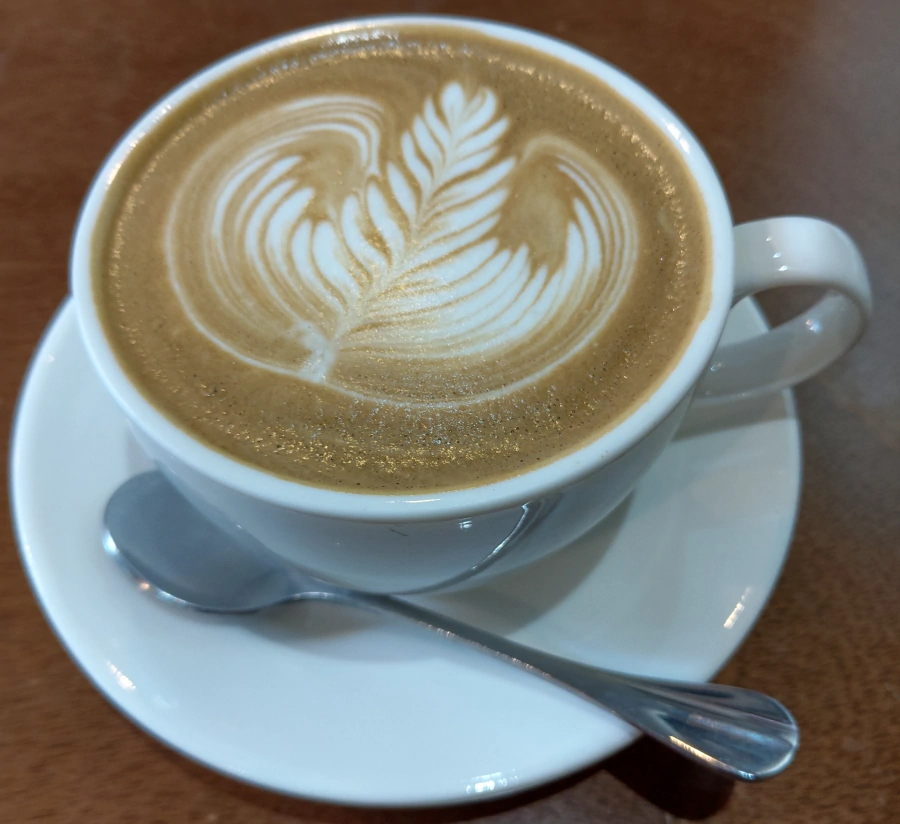

[竹北] 二街咖啡 2nd St. Cafe
| 餐廳名稱: | 二街咖啡 2nd St. Cafe |
|---|---|
| 地 址: | 新竹縣竹北市嘉政二街118號 |
| 營業時間: | 週日~週四 10:30~19:00 |
| 週五~週六 10:30~22:00 | |
| 電 話: | 03 550 1713 |
假日的早上，理論上要找個 Brunch 來悠閒一下，瀏覽一下網路後，決定到 二街咖啡 踩雷看看。
這裡是個住宅區小巷子，似乎附近只有二街咖啡一間店，停車位要找一下，雖然旁邊是小公園，小公園周邊可停車，今天中午也是停的滿滿滿， 還好停車位一多，總是有點流動率。
走進屋內，裝潢是挺有設計感的，最前面是櫃台加廚房，旁邊有樓梯可到二樓。
房子的一個角落 弄成戶外區。
往裡面走，整面牆被當成畫布，一幅有現代感的畫。回家查了官網，才知道畫的是 Marjory Smarth 。 Marjory Smarth 於 1969年11月 出生於海地，於 1974 年搬到紐約。雖然她從小就熟知一些舞蹈風格，但在美國接觸了更多種舞蹈， 參加各式舞蹈比賽，最喜歡 Hip-Pop。之後巡迴國際教學、編舞，學生遍布 日本、倫敦、非洲、俄羅斯、義大利、澳洲、巴西、加拿大、台灣 和世界的其他角落。 2015年 因癌症過世。是 世界街舞文化的開創者之一。
菜單如下，但鹹食只有六種，甜點要看小黑板。 二街咖啡官網菜單 更大更清楚。
今日甜點小黑板。
焙茶拿鐵咖啡，茶加咖啡，我喝得不習慣，也許有別人喜歡吧。 
黑糖拿鐵咖啡，正常好喝。
檸檬汁，正常好喝。
左邊是豬里肌排蛋三明治，很經典的食譜，用料講究的話，通常不會差。 這裡弄得不錯，豬排有先醃過，厚度不錯，菜單宣稱蛋預設是煎到8分熟，調味適中，蠻好吃的。
右邊是 二街早午餐，就是你看到的那五種食物湊在一起，正常好吃。
吃到最後，決定加點甜點，黑糖伯爵茶生乳酪蛋糕，上面那層黑糖伯爵茶像茶凍，軟軟有彈性，下層是生乳酪蛋糕，整個甜點還不錯吃。
二街咖啡 服務態度佳，裝潢有巧思，食物風味不錯。老闆娘 又會街舞，又會美食，會很多種專長，讓人好羨慕。 很優秀的店，有時間會再回訪。